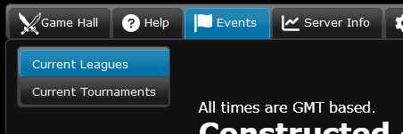
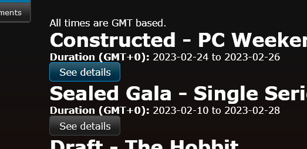
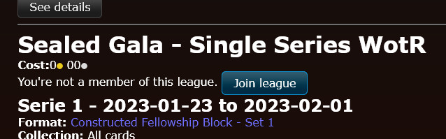
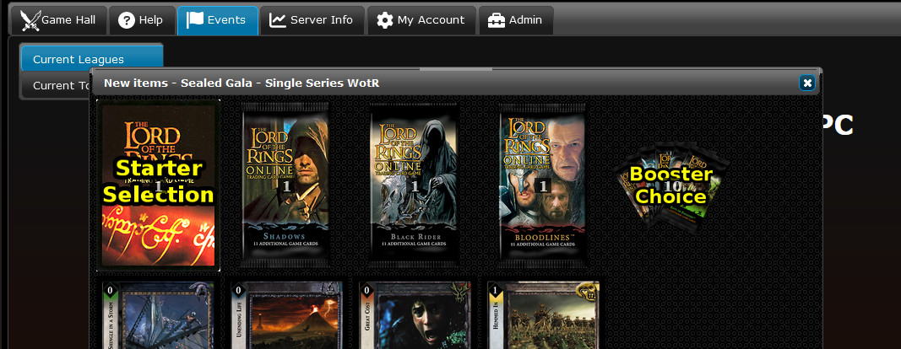
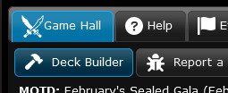
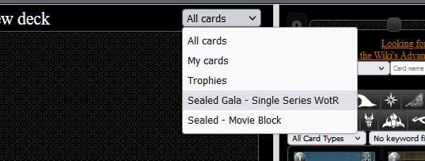
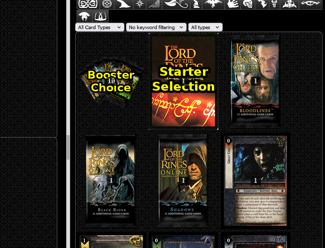
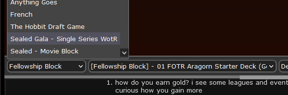

Leagues and Events
There's plenty for both of us; may the best Dwarf win!
What is a League?
A league (not to be mistaken for a tournament) is a type of event where players play matches against opponents, earning points for each win towards their league point total. At the end of the league, whoever has the most points wins. Simple, right?
The Player's Council runs monthly league events as a chance for everyone to experiment with the game or prove your mettle. Anyone may enter, and there are no entry costs.
The PC Weekend League
Every month a weekend is set aside for people to compete and test their prowess on GEMP under one of the three official PC formats. To ensure that as many time zones as possible can participate, the event begins at Midnight UTC Friday until Midnight UTC Monday.
(If you're American, that means that it starts evening Thursday and runs to evening Sunday.)
Formats cycle between PC-FOTR, PC-Movie, and PC-Expanded. Every month different digital promos are awarded to participants and top placers (past rewards can be viewed here).
The PC Sealed Gala
Every month there is also a special sealed product event ran on GEMP to give people a chance to experiment with unfamiliar formats and stretch their deckbuilding muscles. No two Galas are the same; every month is a different grab bag. Galas run for 20 days, usually ending with the last day of the month.
How to join?
PC league events are ran entirely on GEMP. Create an account if you haven't already, log in, and register for leagues on the Events tab:

Then, click on the "See details" button for the league you are interested in:

And scroll down to the "Join league" button. You may need to refresh your browser afterwards for the registration to take.

How do I make a Sealed deck?
When you register with the league as shown above, once the event begins you will be awarded the appropriate sealed product:

To open your product, open the Deck Builder:

and then change the "All cards" dropdown to the name of the sealed league, and you'll be presented with all of your packs; click on any pack to rip it open!


Construct a deck as normal, using only the cards awarded from your sealed product, and you'll be ready to open or join a sealed table!
